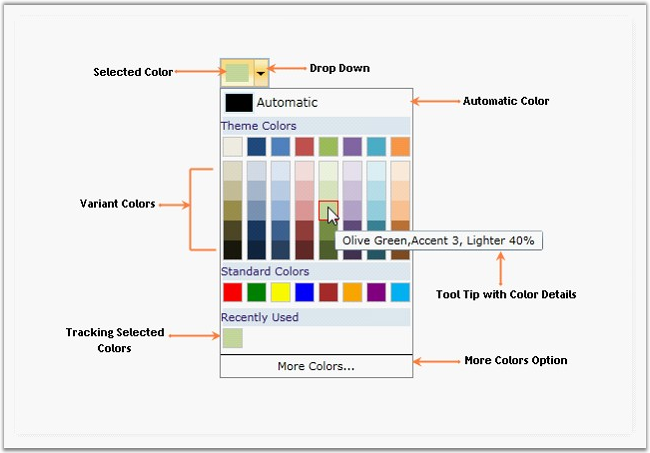

The Color Picker (Palette) control provides a rich visual interface for color selection. The structure of the control represents a palette which is displayed as a drop-down with selected color highlighted at the top. The control also has a Tool-Tip support which bears the name of the color. More Colors options embedded with the control provides the user with wide range of color options.

Figure 957: Color Picker (General Structure)
Key Features
Following are the key features of Color Picker control:
· Theme Panel: Allows you to view the Theme Colors panel.
· Standard Panel: Allows you to view the Standard Colors panel.
· Recently Used Panel: Allows you to view the recently used panel.
· Themes: A list of predefined themes to be applied, are available.
· Standard Variants: Allows you to generate variants to standard colors.
· Theme Variants: Allows you to generate variants to theme colors.
· SelectedColor: Gets or sets the color chosen from Color Picker Palette.
· AutomaticColor: Gets or sets the Automatic Color of the Color Picker Palette.
· Black/White Visibility: Allows you to specify whether black/white or both colors should be made visible or not.
 Getting Started
Getting Started